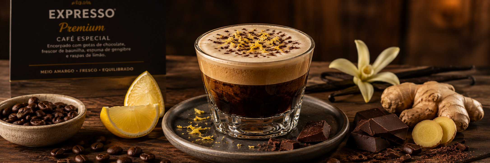
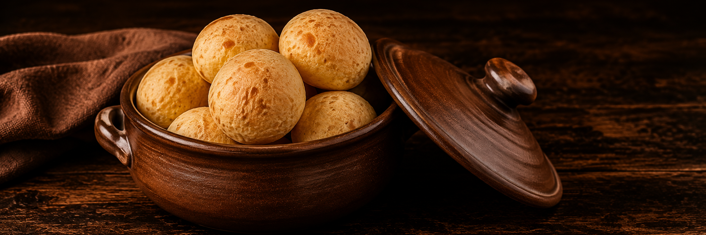
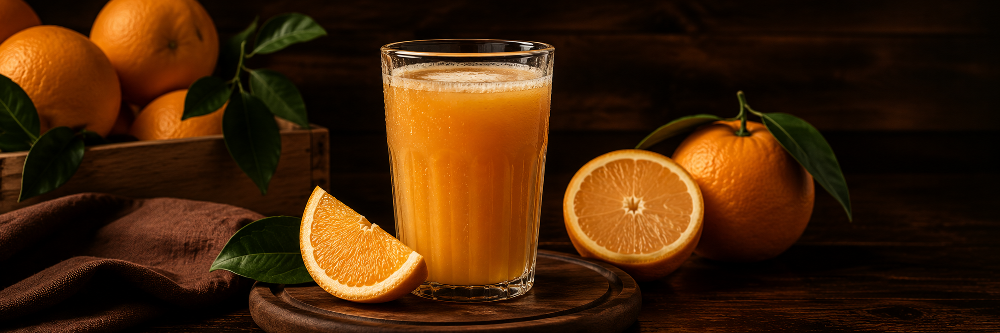
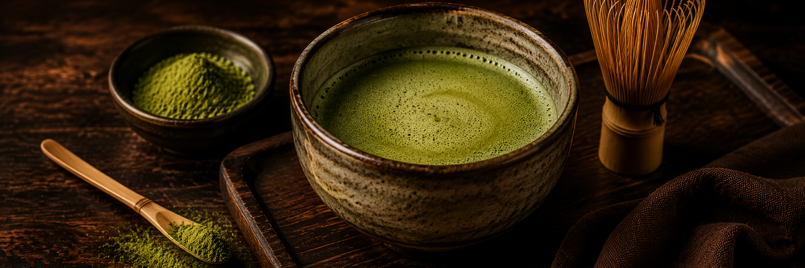
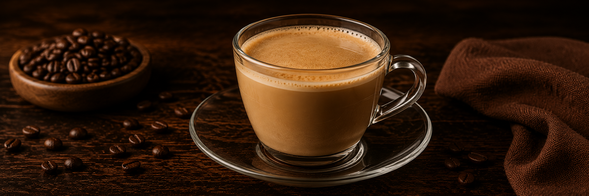

Nossos cafés e acompanhamentos:
Expresso Premium - R$ 23,00

Produzido com grãos selecionados, nosso Café Expresso Premium revela um corpo marcante, notas naturais de chocolate e um delicado aroma de baunilha. A finalização com espuma de gengibre e raspas de limão acrescenta frescor e complexidade, criando uma combinação única de sabores. Um equilíbrio perfeito entre intensidade, doçura e acidez que conquistou o paladar dos nossos clientes e tornou este expresso um dos mais pedidos da casa.
Pão de queijo - R$ 12,00

Tradicional receita mineira preparada com queijo selecionado, resultando em uma casquinha levemente crocante por fora e um interior macio, leve e irresistivelmente puxento. Servido em porção com 6 unidades, é o acompanhamento perfeito para um café fresquinho, proporcionando um sabor autêntico e acolhedor a cada mordida.
Suco de laranja - R$ 15,00

Preparado na hora com laranjas frescas e cuidadosamente selecionadas, nosso suco de laranja é naturalmente doce, refrescante e rico em vitamina C. Sem adição de conservantes, oferece um sabor cítrico equilibrado e uma refrescância irresistível, sendo a escolha perfeita para acompanhar nossos cafés, lanches ou para qualquer momento do dia.
Matcha - R$ 25,00

Preparado com autêntico chá verde japonês em pó, nosso Matcha Premium oferece um sabor suave, levemente vegetal e delicadamente adocicado. Sua textura cremosa e seu aroma fresco proporcionam uma experiência equilibrada e revigorante, ideal para quem busca uma bebida sofisticada e rica em antioxidantes. Um clássico da cultura japonesa que conquista tanto os apreciadores de chá quanto aqueles que desejam experimentar novos sabores.
Pingado - R$ 8,00

Um clássico das cafeterias brasileiras, o Pingado combina a intensidade do café expresso com a suavidade do leite vaporizado na medida certa. O resultado é uma bebida cremosa, equilibrada e reconfortante, com sabor marcante e textura aveludada. Perfeito para qualquer hora do dia, é a escolha ideal para quem aprecia um café mais suave, sem perder a riqueza dos aromas e sabores dos grãos selecionados.